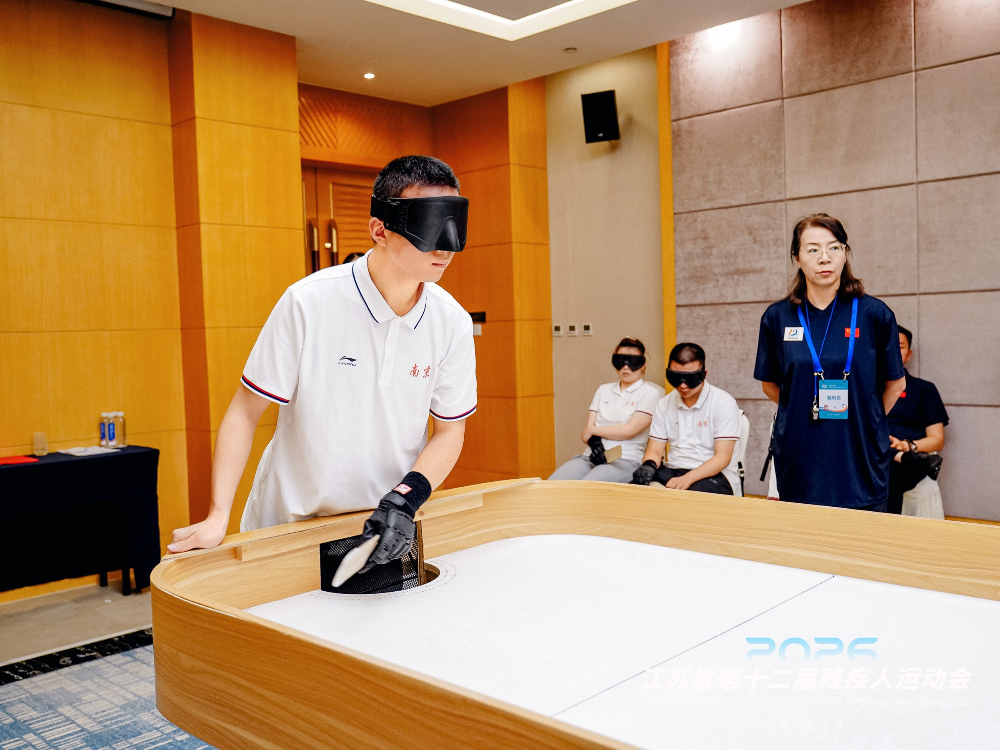
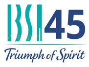
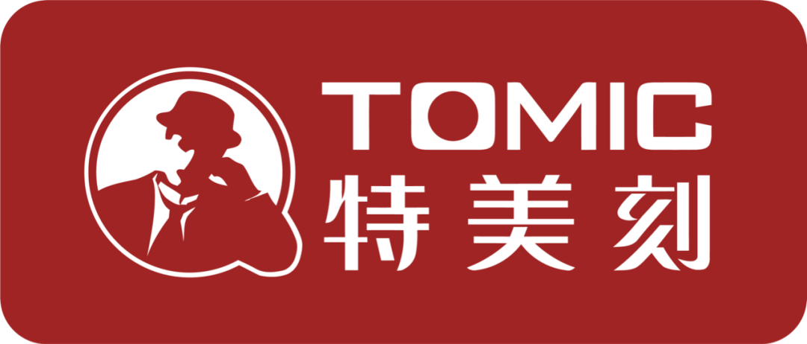
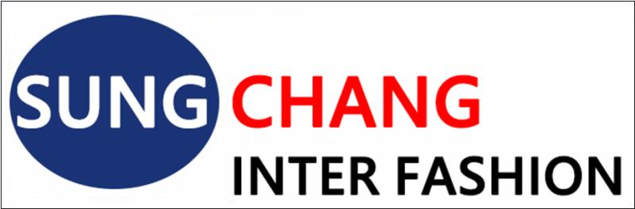

2026 IBSA盲人板铃球亚洲锦标赛
中国盲人板铃球发展
A STORY
IN MOTION
从学校教学试点到全国交流、省级赛事和国际赛场，中国盲人板铃球正形成清晰的发展路径。杭州帕乐盲人体育俱乐部持续参与专业培训、赛事协作与国际交流，是项目发展的重要推动力量。


听见比赛，
感受力量。
中国队首次正式参加IBSA官方盲人板铃球赛事
盲人板铃球是一项专为视力障碍人士设计的室内对抗性球类运动。运动员依靠球体内置响铃判断位置、方向和速度，在快速攻防中展现专注、判断与竞技力量。
2025年，中国运动员首次登上板铃球国际赛场。2026年，队伍将向亚洲最高级别官方洲际锦标赛迈进。此次亚洲锦标赛设男子单打、女子单打和团体赛三个比赛类别。目前已知参赛国有中国、韩国、马来西亚和哈萨克斯坦，最终参赛名单待公布。
2026 IBSA盲人板铃球亚洲锦标赛中国代表队正式名单
专业保障团队与中国运动员并肩前行。
赛程、赛果、直播和赛事消息将在官方确认后第一时间更新。
从学校教学试点到全国交流、省级赛事和国际赛场，中国盲人板铃球正形成清晰的发展路径。杭州帕乐盲人体育俱乐部持续参与专业培训、赛事协作与国际交流，是项目发展的重要推动力量。


新闻、照片、视频与媒体报道将在这里持续发布。
运动员世界排名与历届参赛成绩。
个人介绍待补充。
盲人板铃球是一项专为视力残疾人设计的室内对抗性球类运动，运动员主要依靠球体内置响铃发出的声音判断球的位置、方向和速度，通过击球、拦截、防守和进攻完成比赛。该项目起源于国际盲人体育体系，1977 年由加拿大盲人乔·刘易斯提出项目雏形，后由帕特里克·约克共同完善规则和器材，逐步发展成为兼具体育教育、竞技、健身、康复和休闲功能的视障人士体育项目。国际上，盲人板铃球曾进入残奥会及世界盲人运动会等赛事体系，并在欧洲、亚洲、美洲等多个地区推广开展。
中国盲人板铃球项目的系统开展，较早始于大连盲聋学校。2016 年初，大连盲聋学校为解决北方冬季视障学生室内体育教学和健身活动不足的问题，问询时任国际盲人体育联合会亚洲委员会主席涂晓堃是否能够引进适合盲生开展的室内体育项目，因此国内组织团队以涂晓堃为领队、盲人体育专家毛伟民和陈青，以及大连盲聋学校体育教师金朝文赴意大利比萨观摩欧洲盲人板铃球锦标赛，学习项目训练方法、比赛规则和组织模式。随后，在学校装修建设盲人板铃球活动室，从国外购置球桌等训练器材，在校内开展教学、训练和课外活动，并邀请学生家长及往届毕业生共同参与，形成了我国早期较为系统的盲人板铃球教学实践基础。2016 年底，大连盲聋学校经国际盲人体育联合会盲人板铃球分会评估批准，成为亚洲第一个 IBSA 盲人板铃球发展中心，标志着该项目在我国进入相对规范化的起步阶段。
2017 年，盲人板铃球开始进入中国残疾人康复体育、健身体育项目推广视野。大连盲聋学校会同大连市残疾人联合会，向中国残疾人体育运动管理中心群体特奥部申报盲人板铃球项目；同年 3 月，项目入围“残疾人康复体育、健身体育项目交流展示暨评选活动”，并被评为“三类优秀创编项目”。同年 9 月，首届全国盲人板铃球推介研讨会暨培训班在云南昆明举办，为项目在残联、特教学校和基层机构中的推广奠定了教练员、裁判员和规则普及基础。
2018 年，盲人板铃球进入省级残疾人运动会探索阶段。云南省残疾人联合会将盲人板铃球纳入云南省残疾人运动会比赛项目，设置男子单打、女子单打和混合团体项目。同年 3 月，2018 年中国盲人板铃球项目教练员、裁判员培训班暨研讨会在辽宁大连举办，进一步推动项目师资、裁判和竞赛组织体系建设。此后，江苏宜兴、南京盲校、泰兴等地陆续开展体验、培训和邀请赛，项目开始由特教系统向基层残联、盲人协会和社区体育活动延伸。
2019 年，盲人板铃球形成全国性交流平台。2019 年 10 月 31 日至 11 月 3 日，由中国盲人协会、中国残疾人体育运动管理中心主办，大连市残疾人服务中心、大连盲聋学校承办的首届全国盲人板铃球交流赛在大连举办，来自全国 21 个省、自治区、直辖市的 110 人参赛，其中团体赛参赛队 11 支、运动员 33 人。该赛事推动盲人板铃球由校内试点、区域培训进一步走向全国交流展示阶段。
2020 年前后，项目在江苏、广东、浙江、上海等地逐步开展地方化推广。以江苏扬州为例，扬州市星火志愿者协会等社会力量参与推动项目落地，协会负责人陶为玲在公开报道中提出将盲人板铃球作为适合盲人开展的体育运动加以推广。2020 年江苏扬州盲人板铃球交流赛中，裁判长毛伟民介绍了项目在国内开展情况；大连盲聋学校体育教师、辽宁省盲人板铃球队主教练金朝文对项目健身价值、入门特点和融合意义作出专业说明；运动员孙虎、深圳盲人代表马景阳等参与比赛交流，反映出该项目已经开始在盲人群体中形成参与热情和运动员基础。
2022 年，盲人板铃球进入省级残运会体系取得重要突破。江苏省第十一届残疾人运动会首次将盲人板铃球纳入比赛项目，公开报道指出这也是全国省级残运会首次开设该项目；当时项目裁判长毛伟民也从场地要求低、年龄体能门槛低、规则简单、便于推广等方面介绍了项目优势。浙江省第十一届残疾人运动会同期新增盲人板铃球展示项目，为浙江后续推动项目训练营、锦标赛和省残运会正式竞赛打下基础。
2023 年至 2024 年，盲人板铃球在长三角地区进入更高频次推广阶段。2023 年，上海相关企业社群运动会引入盲人板铃球项目，公开报道中提到杭州帕乐盲人体育俱乐部秘书长、盲人板铃球国家级裁判黄静静参与项目交流推广。2024 年，首届上海市盲人板铃球比赛启动志愿者招募和赛事组织工作；浙江省盲人板铃球锦标赛暨训练营在杭州临平举办，来自全省各地的 38 名运动员参加训练营和锦标赛；江苏省盲人板铃球公开赛在泰兴举办，全省 13 个地级市组队参加，经过 3 天 128 场比赛，项目竞赛基础进一步增强。
2025 年，盲人板铃球全国交流与国际交流同步推进。5 月，第三届盲人板铃球交流赛在江苏宜兴举办，由中国盲人协会、中国残疾人体育运动管理中心主办，宜兴市残联承办，中国残疾人福利基金会支持；中国残联理事、中国盲协主席李庆忠宣布开幕，宜兴市残联党组书记杨志宏致辞，来自全国 16 个省、直辖市的 26 支代表队、78 名视障运动员参加，3 天完成 109 场比赛。宜兴市残联理事长任倬在报道中介绍，宜兴自 2018 年底引入盲人板铃球，2019 年成立盲人板铃球俱乐部，并通过残健融合模式持续推广。
2025 年 11 月底至 12 月初，中国盲人板铃球运动员赴韩国参加“2025 韩国残疾人国际板铃球公开赛”。该赛事于 2025 年 11 月 28 日至 30 日在韩国马里纳贝韩国酒店举行，共有 7 个国家参加，设男子个人赛、女子个人赛等项目。韩国媒体报道显示，参赛国家包括中国、韩国、比利时、捷克、法国、哈萨克斯坦、荷兰等。该项国际赛事参与，说明我国盲人板铃球项目在完成国内试点、全国交流、省级推广的基础上，开始进一步参与亚洲及国际层面的项目交流，为规则接轨、运动员培养和国际化发展积累了实践经验。
2026 年，盲人板铃球在省级残运会体系中进一步深化。浙江省第十二届残疾人运动会盲人板铃球比赛于 5 月 27 日至 30 日在衢州学院体育馆举行，公开报道显示该项目首次纳入浙江省残运会正式竞赛，共设视力残疾男子组、女子组和男女混合组 3 个分项、7 个竞赛项目，吸引 9 支代表队参赛。江苏省第十二届残疾人运动会安排中，也将盲人板铃球列入第一阶段比赛项目之一，计划于 2026 年 6 月 24 日至 7 月 11 日期间举办，说明江苏已将该项目持续纳入省级残疾人运动会项目体系。
截至 2026 年 6 月，盲人板铃球在我国已形成较为清晰的发展路径，即由大连盲聋学校引入试点，依托中国盲人协会、中国残疾人体育运动管理中心及各地残联、特教学校、盲人协会、社会组织共同推动，逐步形成“教学培训—规则普及—全国交流—省级赛事—基层融合—国际交流”的发展格局。2026 年 5 月 27 日至 30 日，浙江省第十二届残疾人运动会盲人板铃球比赛在衢州学院体育馆举行，项目首次纳入浙江省残运会正式竞赛，设置视力残疾男子组、女子组和男女混合组 3 个分项、7 个竞赛项目，吸引 9 支代表队参加；江苏省第十二届残疾人运动会也将盲人板铃球列入第一阶段比赛项目，表明该项目已在部分省份进入较稳定的省级残疾人群众体育赛事体系。
联系 jennyhuang.sport@aliyun.com 获取赞助商合作方案 PDF